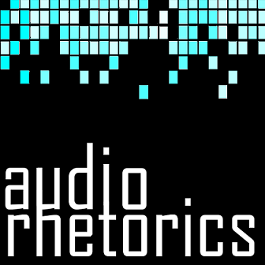

"The best way to predict the future is to invent it."Alan Kay
In 2015, over fifty-two percent of internet traffic took place within mobile devices.
We are in the midst of a massive transition to more mobile and ubiquitous forms of computing, and the rhetorical implications of this shift serve as the exigence for my research into mobile writing. Coming from the discipline of writing studies and digital rhetoric, I am interested in how these technologies are being configured as technologies for creating and accessing writing. Specifically, my research explores how mobile writing technologies can be (and are being) used to subvert entrenched perceptions of physical locations, objects, and/or texts. My research into mobile writing technologies also takes a critical making approach. In my time as the Augmented Reality Criticisms Coordinator for Trace Innovation, I have developed several mobile augmented reality applications. Use the table below to learn more about my research into mobile writing technologies such as augmented reality and location-based media, or visit the Trace Innovation Initiative website to see some of the recent projects I have worked on as ARCs Coordinator.
Recent Projects
-
SeeWorld: Look Beyond the Glass
Co-created by Sidney I. Dobrin, Melissa Bianchi, and Jacob Greene, Trace's "SeeWorld" ARC augments the physical space of SeaWorld-Orlando with a digtial counter-tour of the park's informational texts. With the mobile application, visitors to the park will be able to point their device's camera at physical objects and spaces throughout the park and access digital overlays that detail SeaWorld's efforts to disguise the hazards of marine captivity behind a rhetoric of entertainment and conservation.
-
Augmented Velorutionaries
Co-created by Jacob Greene and Madison Jones, "Death Drive(r)s: Ghost Bike (Monu)mentality" is a location-based augmented reality project that (re)places digital ghost bikes at intersections in Jacksonville, FL where a cyclist has been killed by a vehicle. To read more about this project, see our webtext "Augmented Velorutionaries: Digital Rhetoric, Memorials, and Public Discourse."
-
Super PAC Scramble
Co-created by Jacob Greene and Melissa Bianchi, "Super PAC Scramble" is the first mobile AR app released through the Trace ARC series. You can download it for Android devices through the Google Play store.
-
Augmented Reality Lesson Series
I am currently working on an augmented reality development series for the Programming Historian. My introductory lesson guides users through the process of augmenting a book cover using the Unity game engine and Vuforia SDK. By providing clear, step-by-step instructions for how to use image-based augmented reality technology, I hope to encourage humanists from a variety of disciplines to engage with AR in their research and teaching practices.
-
Audio Rhetorics Podcast

audio rhetorics is a short-form podcast that I started as a companion to my spring 2017 Advanced Exposition course on "aural writing." The episodes are designed to provide novice podcasters with a set of best-practices and rhetorical techinques for using sound to tell stories. You can listen and subscribe to audio rhetorics on iTunes, Pocketcasts, Stitcher. Check out episode 1 above, "What's an Audio Rhetoric?"
-
Articulating Detroit
"Articulating Detroit: Visualizing Environments" is a mobile augmented reality tour funded through a subvention grant from the Association for the Study of Literature and the Environment (ASLE). Slated for release at the 2017 ASLE conference in Detroit, MI, the application will allow users to participate in a location-based public writing project along a 2.5 mile stretch from Wayne State University to the Detroit River. During the tour, participants will be able to access multimedia overlays explaining the rich cultural history of Woodward Avenue within the context of Jeff Rice's spatial-writing methodology, which he outlines in Digital Detroit: Rhetoric and Space in the Age of the Network.
-
UDiscover
"UDiscover" is a mobile augmented reality history tour created by undergraduate students in my spring 2016 Writing through Augmented Reality course. The application is a digital scavenger hunt for augmented "triggers" located through the University of Florida Historic Campus. UDiscover can be downloaded to Android devices on the Google Play store.